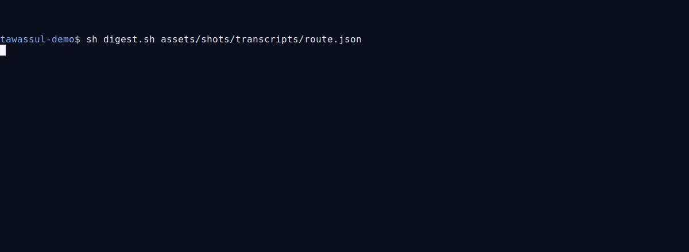

بيئة تشغيل فريق لـ OpenCode
فريق من المتخصصين يوجّهه المنسّق، وسجلّ يحفظ الدليل.
تمنح إضافة تواصل منصة OpenCode منسّقًا ووكلاء متخصصين مشتقّين وسجلّ أهداف دائمًا وضوابط تُبقي الإسناد صادقًا. كل صورة أدناه مأخوذة من جلسة مسجّلة في مساحة عمل تجريبية معزولة.

شاهده يعمل
ثلاثة تشغيلات مسجّلة، لا قائمة مزايا.
كل بطاقة تفتح سيناريو مع صورة إعادة التشغيل وجدول الإيصال والنص المنقّى الذي أنتجه. كل تشغيل موسوم Example demo.

طلب واحد، مالك واحد
يقرأ tawa شيفرة التسعير ويسمّي dev-beam، وهو مطوّر مشتق بنموذجه الخاص، مالكًا لخطأ تسعير.

خمسة متخصصين، سؤال واحد
خمسة وكلاء مشتقين يراجعون الملف نفسه بالتوازي؛ يحفظ التجميع الإجماع والاعتراض بدل أن يذوّبهما في متوسط.

السجل يحفظ الدليل
يحمل الهدف معرّفات بنود ثابتة ونصوص أدلة وتعريف إنجاز ترفض الأداة إغلاقه مبكرًا.
Example demo؛ مقيسة من النصوص الملتزمة، وليست تقديرات.
لماذا وُجد
الجلسات الطويلة تفقد البنية. والرأي الواحد يخفي الخلاف.
المساعد الواحد ينحرف: تضيع حدود المهام، وتفقد القرارات أدلتها، ويختفي سبب قبول تغيير ما في النص. تحفظ إضافة تواصل هذه البنية خارج النموذج — المالكون والإسنادات وبنود الأهداف والأدلة — ليتمكن دور لاحق من فحص ما حدث بدل التخمين.
المتخصصون المتوازون ليسوا أفضل تلقائيًا. يكلّفون أكثر وقد يختلفون. تجعل إضافة تواصل الخلاف مرئيًا، ويسجّل الفاتورة، ويترك القرار للمنسّق. سيناريو التوازي في هذا الموقع يعرض الإجماع والاعتراض معًا.
القاعدة التي يتبعها العرض
كل ادعاء مرتبط بحدث مسجّل. أسماء النماذج حقائق التقاط مؤرخة، لا كتالوج. قائمة الوكلاء مثال مولّد، لا إعداد شخصي. وعندما تفشل آلية، يُحذف السيناريو بدل توضيحه.
افتح السيناريوهات المسجّلة ←القدرات
ما تختبره التشغيلات المسجّلة فعليًا.
التوجيه والإسنادات
يسمّي tawa المالك، ويسجّل النموذج، ويمرّر السياق. وهو لا ينفّذ المهمة بنفسه.
شاهد تشغيل التوجيه ←
سجل الأهداف
تبقى الأهداف وحالات البنود وتعريفات الإنجاز بعد الجلسة. ويُرفض الإغلاق ما دام بند أو معيار غير مكتمل.
شاهد تشغيل السجل ←
المتخصصون المتوازون
سياقات مستقلة تجيب عن السؤال نفسه. يجمع المنسّق الإجماع ويسجّل الاعتراض.
شاهد تشغيل الوكلاء الخمسة ←
الضوابط
أدوات مقيّدة بالأدوار، وموافقة على التغييرات المدمّرة، وفحص إسناد يُبقي الوكيل المحذوف أو الموقوف خارج الفريق.
اقرأ الصلاحيات ونموذج الأمان ←
القائمة في سياقها
القوالب تبقى؛ والعرض يسند إلى متخصصين مشتقين.
الأدوار الأساسية الثمانية قوالب. يضيف العرض خمسة متغيرات مشتقة، كل منها مثبّت على نموذج مختلف، ويوجّه جدول التوجيه العمل إليها. الجدول الكامل في مرجع الوكلاء.
قوالب أساسية
متخصصو العرض التجريبي؛ كل نموذج حقيقة التقاط مؤرخة.
التثبيت
ثلاثة مسارات مدعومة.
استخدم نطاق المشروع لمساحة عمل محلية. يتحقق مثبّت الإصدار من الحزمة ولا يعدّل إعدادات OpenCode لديك أبدًا. مرجع التثبيت هو المصدر الموثوق لكل مسار وعلَم.
مثبّت الإصدار · مشروع
sh install.sh --project <dir> --dry-run
sh install.sh --project <dir>يُحمّل داخل مساحة العمل تلك فقط.
مثبّت الإصدار · عام
sh install.sh --global --dry-run
sh install.sh --globalيكتب الإضافة وبيئة التشغيل تحت جذر إعداد المستخدم.
نسخة المصدر
nvm use
npm install
npm run buildثم افتح مساحة العمل؛ سيكتشف المضيف الإضافة.
إعداد واحد داخل التطبيق
افتح Settings → General وفعّل Show agent. عندها يحمل محرّر الطلب محدّد الوكيل، فيمكن للجلسة أن تعمل كمتخصص مشتق. وما دام الخيار متوقفًا، يبقى التطبيق على وكيل Build.
المنصات: Linux x64 هو المسار الكامل، وmacOS arm64 وx64 تجريبيان، وWindows x64 مدعوم أصليًا، وWSL2 تجريبي. مرجع التوافق يذكر الدليل وراء كل صف.
الإصدارات
أحدث البنيات المنشورة.
تُجلب من واجهة GitHub العامة. إذا فشل الطلب أو تقيّد بالمعدل، يظل الرابط الثابت أدناه صالحًا.
بيانات الإصدارات الحيّة غير متاحة الآن.
المستندات
ابدأ بالصفحة التي تناسب مهمتك.
ابدأ هنا
التثبيت، والتوافق، والإضافات، والترقية، وملاحظات الإصدار.
افتح مركز المستندات ←
العمل
الوكلاء، والأدوات، والأوامر، والمهارات، والصلاحيات، والإعداد، والبيئة.
افتح مركز المستندات ←
التشغيل
الحالة، وقاعدة البيانات، والبنية، والمراقبة، والأمان، والخصوصية، واستكشاف الأخطاء.
افتح مركز المستندات ←
المرجع
الاعتماديات، والتحقق، والأسئلة الشائعة، والمصطلحات، وخارطة الطريق، وسياسات المشروع.
افتح مركز المستندات ←